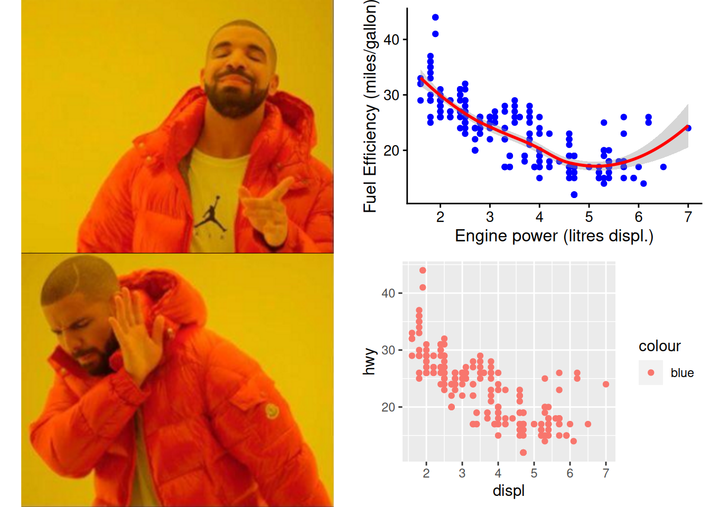

`geom_smooth()` using method = 'loess' and formula = 'y ~ x'

Markdown
Markdown combines both the clear reading experience from word processor documents with the benefits of software code documents, which is both versatile and easy to use—even for people that only know how to operate Word or Writer.
At first, Markdown was basically a small script John Gruber wrote for himself in 2004 to yield these benefits.
In 2012 a group of developers form CommonMark to standardise Markdown into an internationally accepted norm.
R Markdown
R Markdown documents are fully reproducible. Weave together narrative text written in markdown with executable code to produce elegantly formatted output.
You can create “Notebooks” that include chunks of code that can be executed independently and interactively, with output visible immediately beneath the input.
Or you can use Rmarkdown to render a final document showing code and/or outputs in different formats.
You can use multiple languages besides R: from awk (https://en.wikipedia.org/wiki/AWK) to groovy (https://groovy-lang.org/) and including python, and sql.
Jupyter
Project Jupyter develops open-source software, open standards, and services for interactive computing across multiple programming languages.
Jupyter supports execution environments (called “kernels”) in several dozen languages, including Julia, R, Haskell, Ruby, and Python.
Quarto
An open-source scientific and technical publishing system. Quarto can use Jupyter notebooks or plain text markdown to create dynamic content or reproducible documents.
Quarto enables you to weave together content and executable code into a finished document. To learn more about Quarto see https://quarto.org.